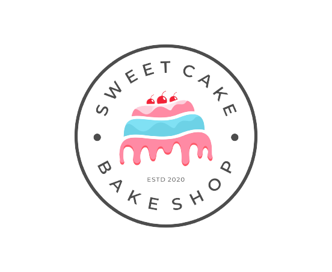

<mat-toolbar style="background-image: linear-gradient( 173.1deg,  rgba(226,66,249,0.94) 10.2%, rgba(79,147,249,1) 77.3% );" class="flex">
   <a class="logo"><span routerLink="/">Bake My Cake</span></a>
    <div>
        <a><span routerLink="/">Home</span></a>
        <a><span routerLink="/About-us">About</span></a>
        <a><span routerLink="/contanct-us">Contact Us</span></a>
        <a><span routerLink="/faq">Faqs</span></a>
        <button mat-raised-button color="warn" routerLink="/login" >Admin<mat-icon>person-add</mat-icon></button>
    </div>
</mat-toolbar>
